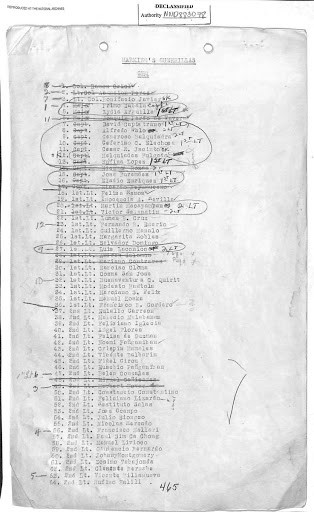
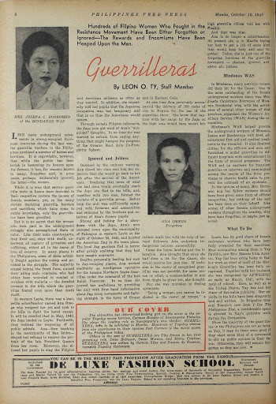
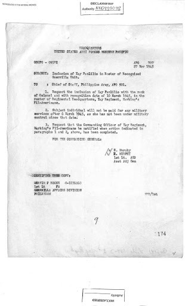

LYDIA’S SERVICE RECORD · VIEW ORIGINAL PHOTO ↗Lydia Villanueva-Arguilla
A writer and editor who joined Marking's Guerrillas, working in underground intelligence. A wartime roster identifies her as First Lieutenant.
Examine her record →PHILIPPINES · 1941—1945 · DIGITAL HISTORY EXHIBITION
Beyond the front lines were Filipinas who gathered intelligence, cared for the wounded, organized supplies, and fought for liberation. Enter their history.
ENTER THE MUSEUM ↗ Explore primary sources ↓
COURAGE · CARE · RESISTANCE
CURATOR'S NOTE / 01
Filipino women participated in the resistance against Japanese occupation in multiple ways: as guerrillas, intelligence workers, nurses, organizers, and civilians who provided essential aid. Their experiences were varied and often difficult to recover from official records. This exhibit invites you to examine evidence, question whose stories were preserved, and recognize the work of women in wartime.
Historical method: archival documents and postwar accounts are interpreted in their original context; they are not treated as interchangeable evidence.
GALLERY ONE / WOMEN OF RESISTANCE

LYDIA’S SERVICE RECORD · VIEW ORIGINAL PHOTO ↗A writer and editor who joined Marking's Guerrillas, working in underground intelligence. A wartime roster identifies her as First Lieutenant.
Examine her record →
YAY’S RECOGNITION RECORD · ARCHIVE ↗A journalist who helped lead and administer Marking's Guerrillas, preparing communications and supporting sick and wounded fighters.
Examine her record →A wartime nurse whose service was later supported by a 1947 affidavit, showing how women had to document their contributions after liberation.
Examine her record →GALLERY TWO / BEYOND COMBAT
Nurses and aides treated wounded fighters and helped sustain resistance networks.
Messages, reports, and intelligence connected people operating under occupation.
Logistics, supplies, administration, and civilian support helped resistance groups function.
GALLERY THREE / CHRONOLOGY
GALLERY FOUR / PRIMARY SOURCE COLLECTION
Select any archival object to inspect its provenance, meaning, and limitations. Each exhibit includes a visible image preview and a link to the original source archive.
The exhibit images, timeline, annotations, and quiz work offline. Links to the original online archives require an internet connection.
GALLERY FIVE / TEST YOUR KNOWLEDGE
GALLERY SIX / HERITAGE & ACTION
Women's wartime labor can disappear when histories focus only on generals and battles. Preserving their records broadens our understanding of civic participation and the human cost of war.
Support archival digitization, responsible metadata, and long-term storage of original records.
Bring primary-source analysis into classrooms and community history projects.
Check dates, provenance, and competing perspectives before sharing historical claims online.
Primary objects are credited to Filipinas Heritage Library, with original item links provided in each exhibit. Additional context: Women and War exhibition, U.S. National Archives, Philippine Archives Collection, and Lydia Arguilla biography.
AI was used for website code assisted by ChatGPT (GPT-6). The initial explanatory text was written by me. I independently verified all primary source dates, citations, image rights, and historical claims.
ARCHIVAL OBJECT / PRIMARY SOURCE